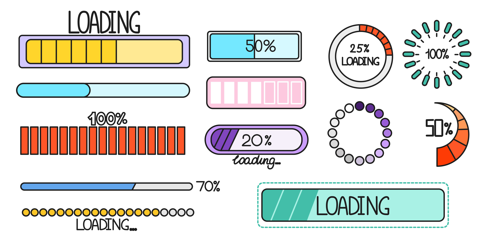

Process monitoring
Keeping Database Up & Running
Het monitoren van serverprocessen houdt in dat de prestaties, de beschikbaarheid en het gedrag van processen die op een server draaien continu worden bijgehouden. Deze monitoring zorgt ervoor dat kritieke processen optimaal functioneren en helpt bij het identificeren van problemen of afwijkingen die de stabiliteit of prestaties van het systeem kunnen beïnvloeden. De belangrijkste meetgegevens die worden gemonitord zijn CPU- en geheugengebruik, schijf-I/O, netwerkactiviteit en uptime van processen. Monitoringtools zoals Prometheus, Nagios of ingebouwde systeemhulpprogramma's verzamelen gegevens in real-time en activeren waarschuwingen of automatische reacties wanneer drempelwaarden worden overschreden of wanneer processen falen. Effectieve bewaking van serverprocessen is essentieel om de betrouwbaarheid van het systeem te handhaven, het gebruik van bronnen te optimaliseren en potentiële problemen direct aan te pakken voordat ze escaleren.